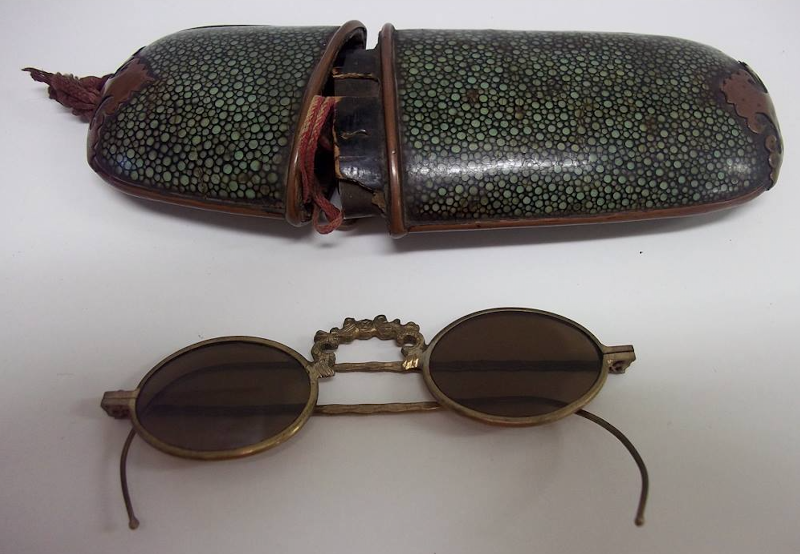
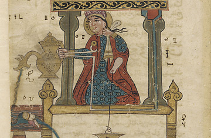
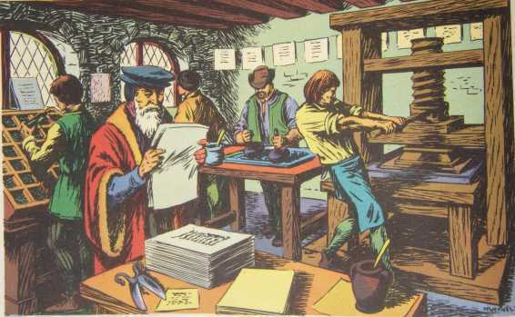
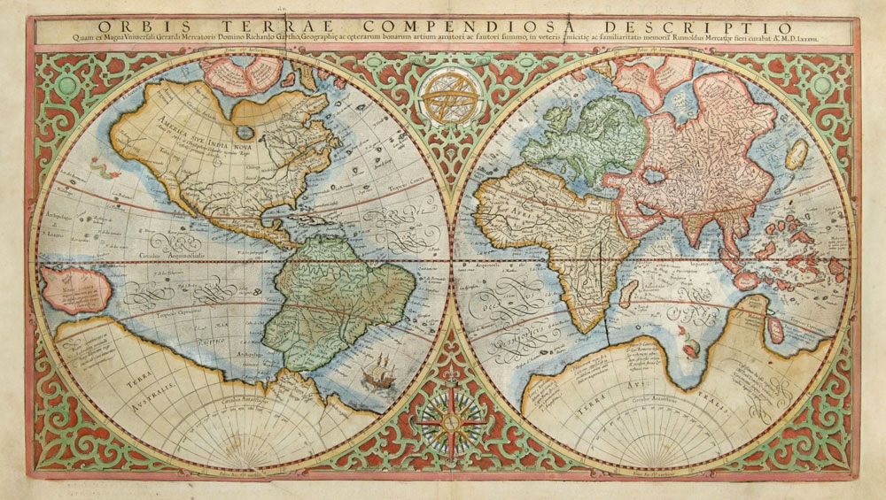

History of scientific discovery - a timeline
1000 AD - 1900 AD
1034 AD

"Chinese develop eyeglasses by fixing lenses to frames that fit onto people's faces."
1206 AD

"Arabic engineer al-Jazari invents a flushing hand-washing machine,
one of the ancestors of the modern toilet."
1450 AD

"Johannes Gutenberg pioneers the modern printing press,
using rearrangeable metal letters called movable type."
1530 AD

"Gerardus Mercator helps to revolutionize navigation with better mapmaking."